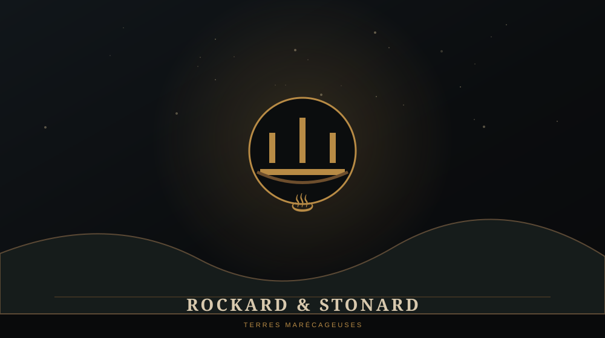

WARCRAFT / LIEUX / WARCRAFT I
ROCKARD AND STONARD
Deux implantations de la Horde

TYPEImplantations orques
FACTIONHorde
CAMPAGNEHumaine
MISSIONChapitre XI
🏚️ ROCKARD ET STONARD
Rockard et Stonard représentent deux positions importantes de la Horde pendant la fin de la campagne humaine. Leur destruction constitue l'avant-dernière grande opération avant l'assaut contre Blackrock Spire.
⚔️ AVANT L'ASSAUT FINAL
À ce stade, la campagne humaine n'est plus défensive : les forces du royaume frappent directement les infrastructures de la Horde afin d'ouvrir la voie vers son commandement.
⚠️ LORE ULTÉRIEUR / SPOILERS
Stonard survivra comme nom important dans le lore et deviendra notamment une implantation orque connue dans les Swamp of Sorrows. Rockard est beaucoup moins présent dans les représentations modernes.
💡 LE SAVAIS-TU ?
← RETOUR AU CODEX WARCRAFTStonard fait partie des noms de Warcraft I que les joueurs de World of Warcraft peuvent encore reconnaître directement.